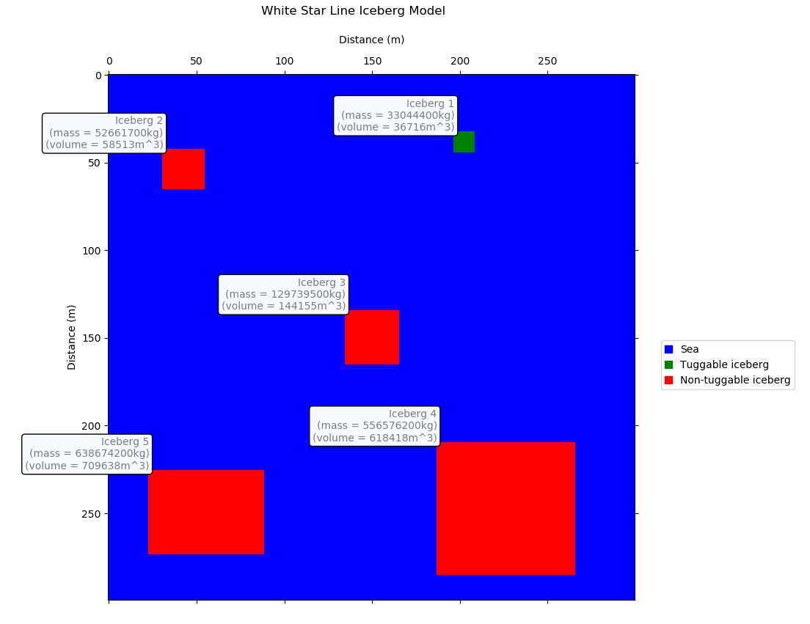

This model reads and interprets lidar and radar data from a csv or text file in order to determine the position, mass and volume of icebergs. This model has been written as part of a university project based on a hypothetical scenario where the White Start Line shipping company has set out a criteria for such a model to help them determine the position of icebergs and whether they can be tugged out of the way. This would, in theory, help in planning shipping routes and save time and money by determining whether a tugboat would be successful if sent out with a ship to clear a route (a tug boat, in this model, can only move an iceberg if the mass is less than 36 million kilograms).
This application has a simple graphical user interface which will appear when the program is run and the user can browse their files and select the radar and lidar data that is to be input into the model. Once this has been done the 'Run' button can be pressed to generate the model output - a map of the area showing the position of any icebergs, their given ID, mass and volume. The identified icebergs are colour coded based on whether they exceed the threshold mass for tugging, red if they cannot be tugged and green if they can; the background colour has been set to blue and has been assumed to represent the sea, however, it is possible that some of this area is not actually sea.
Please follow the link below to download the model from my GitHub page:
Download White Star Line ModelPlease note: This model has been scripted using Python version 3.6.5. Issues may be encountered if you have installed and are trying to run the model using a different version of Python.